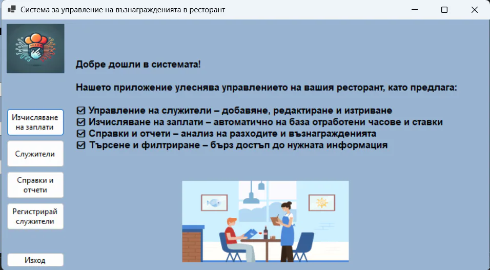

Ръчно изчисляване на заплати
Ресторантите често управляват заплатите на служителите с таблици или на ръка, което води до грешки, изгубена информация и затруднено проследяване на разходите за персонал.
Бизнес системи / ресторантьорство
Приложение за автоматизиране на управлението на възнаграждения в ресторантьорския бизнес с отчети и справки за разходи за персонал.
Портфолио проект
ЗА ПРОЕКТА
RestaurantSalaries е Windows Forms приложение, предназначено за автоматизиране на управлението на възнагражденията в ресторантьорския бизнес. Приложението позволява ефективно управление на данните за служители, изчисляване на заплати на база отработени часове, обработка на бонуси и удръжки, както и генериране на детайлни отчети за разходите за персонал.
Ресторантите често управляват заплатите на служителите с таблици или на ръка, което води до грешки, изгубена информация и затруднено проследяване на разходите за персонал.
Приложение с автоматично изчисляване на възнаграждения, управление на служители, бонуси и удръжки, и генериране на справки по периоди.
ФУНКЦИОНАЛНОСТИ
Добавяне, редактиране и изтриване на записи с име, длъжност и почасова ставка.
Автоматично изчисляване на база отработени часове, почасови ставки, бонуси и удръжки.
Автоматично създаване на отчети по служители и периоди с проследяване на разходите.
Търсене по име, длъжност или период и филтриране на отчетите по различни критерии.
Вход и регистрация на потребители с контрол на достъпа до системата.
Entity Framework Core с Code-First миграции за лесно управление на базата данни.
ПРОЦЕС
ТЕХНОЛОГИИ
RestaurantSalaries показва уменията на KoveForge за изграждане на бизнес приложения:
Опиши ни процеса, който искаш да дигитализираш. Ще ти предложим ясна първа стъпка.